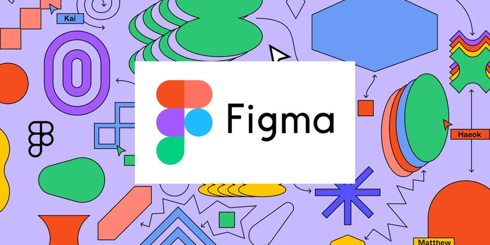

Що таке Figma і навіщо вона потрібна?
Figma - це веб-додаток для дизайну інтерфейсів, який дозволяє створювати макети, прототипи, іконки та багато іншого. Це один із найпопулярніших інструментів в індустрії дизайну та розробки інтерфейсів. Figma дозволяє дизайнерам працювати в реальному часі, обмінюватися макетами та коментарями, спрощує процес спільної роботи та робить його більш ефективним. Однією з основних переваг Figma є те, що вона працює у браузері – немає необхідності завантажувати та встановлювати програму на комп'ютер. Це зручно, якщо потрібно працювати з різних пристроїв або співпрацювати з дизайнерами з різних місць. Крім того, Figma має багато корисних функцій, таких як можливість створювати інтерактивні прототипи, редагувати векторні графіки, використовувати бібліотеки та багато іншого. Ці функції роблять Figma незамінним інструментом для дизайнерів та розробників інтерфейсів. Figma допомагає дизайнерам створювати красиві та інтуїтивно зрозумілі інтерфейси, а також полегшує їхню спільну роботу над проєктами. Якщо ви працюєте в області дизайну інтерфейсів (UI/UX), то Figma – один із інструментів, які вам слід вивчити.
Що можна створювати на Figma
Давайте розберемо, з чим можна працювати і що створювати на цьому, по-справжньому універсальному, інструменті для будь-якого дизайнера.
- Макети веб-сайтів. Ви можете створювати макети для різних веб-сайтів за допомогою інструментарію Figma.
- Макети мобільних додатків. Ви також можете створювати макети для мобільних додатків для iOS та Android.
- Дизайн іконок. Figma дозволяє створювати векторні іконки різних розмірів та форм, які можна використовувати у вашому дизайні.
- Прототипи. Figma дозволяє створювати інтерактивні прототипи, завдяки яким можна переглядати та тестувати дизайн перед його реалізацією.
- Дизайн інтерфейсів для настільних програм. Ви можете створювати дизайни для інтерфейсів настільних програм для Windows, MacOS та Linux.
- Створення банерів. У Figma ви можете створювати банери для використання на веб-сайтах та соціальних мережах.
- Дизайн логотипів. Прості та ефективні логотипи для вашого бренду чи компанії
- Створення презентацій. Ви можете використовувати Figma для створення презентацій, які допоможуть продемонструвати дизайн колегам або клієнтам.
- Редагування фотографій. Хоча Figma не є програмою для редагування фотографій, ви можете використовувати її для швидкої зміни розмірів та вирівнювання елементів у ваших дизайнах.
- Розробка UX/UI дизайну. Figma надає інструменти для створення красивого і зручного інтерфейсу користувача, який легко розуміти і використовувати. /li>
Сподіваємося, цей список допоміг вам оцінити всю широту та міць Figma, як інструмента для створення цілого ряду найрізноманітніших креативів.
Як почати працювати на Figma
Якщо ви новачок у Figma, то спершу вам може бути непросто розпочати роботу з цією програмою. Однак не переживайте. Figma досить проста в освоєнні, а завдяки нашим порадам, ви почнете працювати в ній ще швидше та легше.
Ось кілька кроків, які допоможуть вам освоїти Figma:-
Створіть обліковий запис на Figma.com
Для початку роботи вам потрібно створити обліковий запис на офіційному сайті Figma. Зайдіть на сайт, натисніть кнопку «Sign Up» та заповніть форму реєстрації. Ви отримаєте доступ до безкоштовної версії програми, яка містить усі необхідні функції.
-
Вивчіть інтерфейс
Як тільки ви увійдете до Figma, вам варто вивчити інтерфейс. Він може здатися складним на перший погляд, але не турбуйтеся, ви швидко освоїте його. На головній сторінці ви побачите свої проєкти, які ви можете відкрити та почати редагувати.
-
Створіть свій перший проєкт
Створити новий проєкт у Figma дуже просто. Натисніть кнопку «Create new» у верхньому лівому куті екрана. Виберіть тип проєкту, який потрібно створити, наприклад, мобільний додаток, веб-сторінку або логотип. Потім задайте розміри екрану та інші параметри, які відповідають вашому проєкту та починайте творити!
-
Використовуйте інструменти Figma
Figma має безліч інструментів, які допоможуть вам створювати візуальні елементи. Це можуть бути інструменти для створення форм, ліній, тексту, фігур та багато іншого. Усі вони знаходяться у лівій панелі на екрані. Вивчіть їх по одному, спробуйте в дії на якомусь чорновому проєкті, а коли розберетеся, що до чого, можете приступати до наступного етапу.
-
Додати зображення та елементи
Щоб зробити ваш проєкт візуально привабливішим, додайте до нього зображення та елементи. У Figma є безліч безкоштовних ресурсів, які ви можете використовувати, такі як іконки, шрифти та фотографії. Ви також можете імпортувати власні зображення та елементи.
-
Збережіть свої роботи
Завершивши роботу в Figma, не забудьте зберегти ваш проєкт, щоб мати можливість потім повернутися до нього і внести нові правки та доповнення. Це робиться натисканням кнопки «Save» у верхньому лівому кутку екрана. Ви також можете створити копію вашого проєкту або експортувати його до іншого формату.